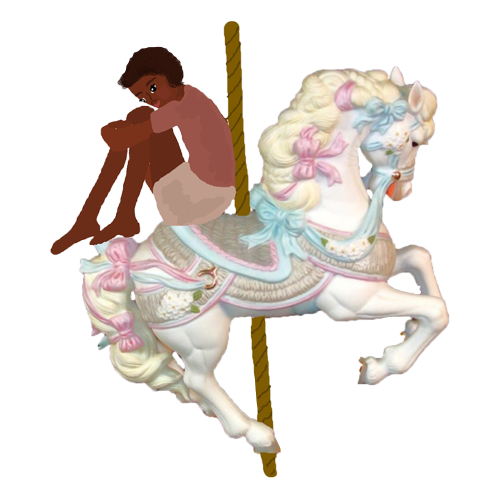

Off on the road again, the boy and the girl kept driving. They drove until the desert faded to ashes. The girl felt disgusted of the boy, she didn't trust him. But she didn’t trust in herself either, for she didn’t know of where she came, nor did she know the origins of the boy. The boy was at the wheel, and he relished in the girl, he wanted her there with him, he recognized himself in her, and he had trust, though he knew she didn’t trust him. They drove upon what seemed to be an old abandoned carnival, with rides and games and candy shacks, still painted to perfection, only lightly coated in sand. It seemed out of place and unreal, the only sign of coherence was the ground on which it lay, where the desert ended and opened up into the coast. Poppy crouched up on her seat, slowly standing against the car’s acceleration, against the pull of the boy. She stood all the way up almost falling out the car, and the boy slowed his speed, grabbing her from falling out the side. They drove slowly along the edge of the carnival, Poppy standing on the seat, her wings spread out to the dusty skies, squinting at the mysteries before her. The boy grabbed at her legs, trying to sit her back down, while trying to keep his eye on the road, but next thing he knew she jumped out the side of the car. The boy stopped quickly, worried and desperate to see if she was alright. She was rolling against the floor in a cake of dust. He climbed out after her, running up to her side. Her wings were slightly torn and she was covered in sand and dirt. She smiled real big staring into the carnival, and took off running through the empty rows of rides that towered like old ruins, the songs still playing from each machine, repetitive, uninterrupted, and slow, like they’d been playing for years without anyone to hear. She stopped when she got to the most magnificent thing she’d ever seen, it made her gasp and smile. It was a carousel, coated in gold and every crystal she could ever dream, and it just wouldn’t stop spinning. There was a white lion with opal eyes, a black horse with a moonstone saddle, and a smiling pig with a porcelain apple, twirling to a little dixie tune that began to burn into their thoughts. There were mirrors in every direction, and the animals bobbed up and down, up and down. It reminded her of the circus. She ran over to it bouncing on her toes, and climbing up onto the lions back.

She rode it, forever, going around and around and eventually the boy came over to join her. He was going to pull her off, take her away, but he was soon hypnotized in vertigo, spinning atop the horse. They went around and around holding onto the bars, hopping between the animals. The boy began to feel again, for the first time in a while, and it was stronger than he’d ever remembered. As the carousel spun faster and faster, everything began to blur together, the face of the girl who was laughing, her head falling back, and the boy who burst with joy. The girl smiled at him and he smiled at her and he could feel the atmosphere boiling up inside him, trying to come through. They kept going until their ears buzzed and the earth seemed distant, and so they hopped off, dizzy and twirling and falling. Until everything stopped. The girl was surprised by the consistency, of this world she was in, everything was still again, the same as it had been before. Once they caught their bearings, the boy ran over to something fluffy and pink, the girl followed to see what it was. The boy pulled off two for each of them. Poppy twirled the cotton candy in the air, pulling it off and following the boy’s motion, letting it dissolve on her tongue. The boy had pure elation, and they spent four days riding every rollercoaster, playing every game, not even noticing the shifting colors in the sky. Each round of the rides, each twirl of candy, each game he won, his happiness spilled through his eyes, his mouth, his nose, and he began to fade away, ever so slightly. On rollercoasters they went, of candy they ate, of prizes they won, and soon the boy became tired, drained of his jubilee.
But the girl’s satisfaction kept growing, draining into her, she was so happy, she couldn’t stop laughing, she couldn’t stop smiling and it took twenty minutes for the boy to pull her away from the rollercoaster, as he began to realize the great deal of time they had spent. It was the one that went upside down, and she rode it dazed and drugged at the point of rapture. He unbuckled the girl, pulling her off of the ride and began to drag her away. She made herself heavy, her feet trailing behind her, scraping against the ground. The boy looked around for where to go, but he didn’t know, he didn’t feel anything, and the roads had come to an end. He noticed a small white ferry tied to the dock, over near the ferris wheel and he carried the girl over to it, loading her onto the boat along with all the stuffed animals they had won. Poppy hugged the bears and wouldn’t let go and she wouldn’t leave any behind. He locked the doors so she couldn’t leave in her elation, and left her twirling through the bottom deck, dancing and singing, as he went off to try and figure out how to start the engine. Eventually the boy started the boat and they began to float away, as she ripped the stuffing from each of the toys in hyperfocus, as if she was performing an operation, her happiness dragged into the seas.